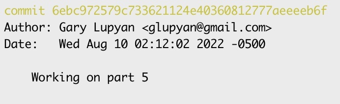

Submitting assignments
Contents
Submitting assignments#
We’ll be using Github classroom for submitting assignments. This will give you practice with version control and allow us to easily comment on your code.
Assignments are due on Tuesday by 9pm central.
Step 1: Accept an assignment#
Make sure git is installed and that you have an account on Github (see installation instructions)
Accept the assignment. For the purposes of this tutorial, please accept this test assignment
Next, you’ll want to clone the repository on your local machine using
git clone URL
where URL is the URL of your personal assignment repository; it should look something like https://github.com/psych750/exercise-0-glupyan
Tip
Use a directory like Documents/classes/psych750/exercises and clone all the exercises into it to keep things neat
Step 2: Do the assignment#
Note that your cloned repository contains a file called test_assignment.py. For real assignments, the exercise repository will contain starter code and any additional files you may need to complete the assignment.
This test assignment has 3 parts:
Create a new file called
my_addition.txtwhich should just have the text “A new file”Edit
my_addition.txtto have a second line of text reading “I added a second line”Edit
test_assignment.pyto printHello big world
When you’re done with each part, you’re going to commit the change, tag it, and push it to the remote repository allowing us to look at it and give you feedback as necessary.
Step 3: Submit each part of the assignment#
After you complete each part, commit the changes and tag it.
git add .
git commit -m "Finished part 1"
git tag "Exercise_0_1"
git push --tags
Some parts of actual assignments will require you to code quite a bit, so you’ll want to make multiple commits. You can push these intermediate commits to the classroom site if you like, but all that’s required is that your final solution for each part is committed and tagged.
Important
You must use following format for tags: Exercise_[exercise#]_[part#]. For example, your tag for part 3 of Exercise 2 should be Exercise_2_3.
Tip
You can combine add and commit into a single line like so: git commit -am "Finished part 1".
Note
By default git tag will assign the tag to your most recent commit (i.e., the HEAD).
If you want to attach the tag to a previous version, you can do specify its hash (see Tips below). Read more about tags here
Warning
Forgetting to use --tags`` after push` will cause the tags you added to only be visible to you locally; we won’t be able to see them on our end
Tips#
See the git log#
git log
You can print a more compact log using
git log --oneline
Figure out what’s been changed and which files are being staged#
git status
Check out a particular commit#
You can check out using a tag name, e.g., Exercise_1_2
git checkout <tag name>
You can list the available tags (i.e., those you’ve used previously) with
git tag
If you want to go to a previous commit that did not have a tag associated with it, use the hash provided by git log use the hash value of the commit you want to revert to:
e.g. if the relevant part of the log looks like this: 
you can go to this commit by using
git checkout 6ebc972579c733621124e40360812777aeeeeb6f
Undo a push#
Sometimes you’ll push some changes to a remote repository and want to undo them. To do this, reset back to the version you want by using the appropriate hash, e.g.
git reset --hard a4711f034e8cf4d90a4e537428b033333240d58a
Note
The –hard flag ensures that the reverted commit is wiped clean from the git log
This resets your local branch. You can now update the remote branch to the current status (the current HEAD) by using
git push -f
Get the URL of remote branch#
git remote -v